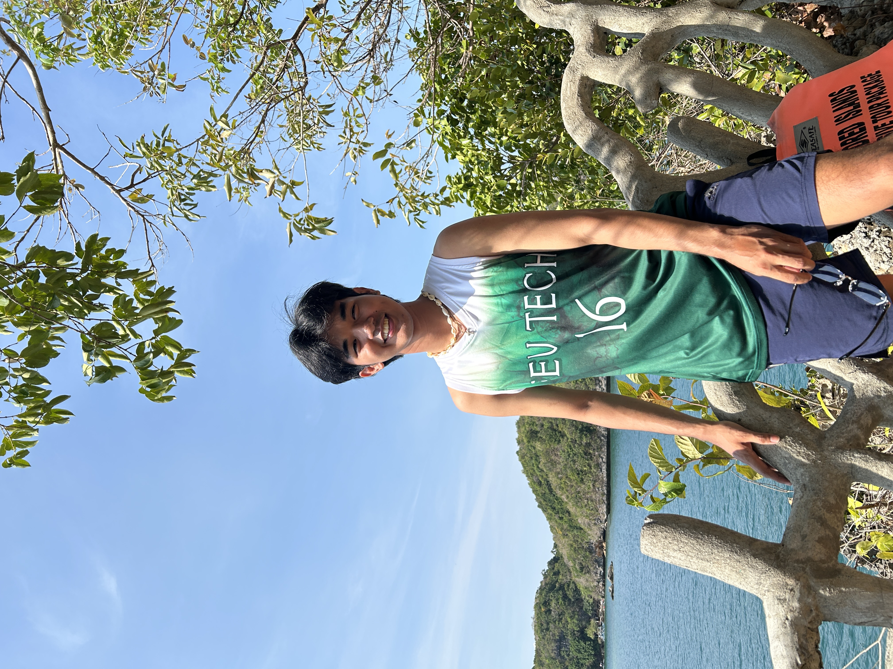

Hundred Islands
The kind of day that resets everything: island views, clear water, and enough open sky to make the week feel far away.
- Island views
- Sea air
- Core memory
Personal atlas / Volume 01
Not collecting pins. Collecting the tiny details that make a trip feel like yours.

Chapter 01 / Blue hour
The kind of day that resets everything: island views, clear water, and enough open sky to make the week feel far away.
“Leave room in the plan for the view.”
Chapter 02 / Beyond home
First international chapter
HKGBright lights, busy streets, and food that still comes back to mind.
Next coordinate
?No fixed map yet. Better stories happen when there is space to change direction.
Route ledger
Go far enough to come home with a different story.Next volume: Life